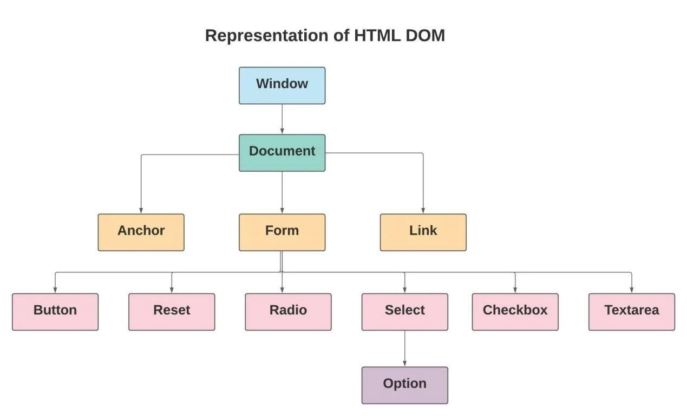

HTML:
Hyper means “beyond”Hyper text resembles text that contains content beyond what we see.
What is a Markup Language?
- The markup is derived from common computer terminology, where “marking up” is the process of preparing for presentation.
- Markup language is a presentation language
- It describes how to display information on the screen, but doesn't actually do it
- HTML (Hyper Text Markup Language)
- XML (eXtensible Markup Language)
- SGML (Standard Generalized Markup Language)
- SVG (Scalable Vector Graphics)
Evolution of Markup Languages
- GML [Generic Markup Language] at “CERN” Labs
- SGML [Standard Generic Markup Language]
- Early 1990’s “Tim Berners Lee” introduced “HTML” for “Mosaic” browser.
- IETF (Internet Engineering Task Force) 1993
- 1995 HTML 2.0
- 1997 HTML 3.2
- 1997 HTML 4.0
- 1998 W3C (World Wide Web Consortium) formed
- 1999 XHTML 1.0
- 2006 XHTML 1.1
- 2008 WHATWG (Web Hypertext Application Technology Working Group)
- 2014 WHATWG and W3C merged into one organization
- 2018 WHATWG published HTML 5.2
- 2020 WHATWG published HTML 5.2
- 2021 WHATWG published HTML 5.2
- WHATWG has been working with Microsoft since 2009
- Microsoft has been working with WHATWG since 2010
- Microsoft has been working with WHATWG since 2010
What is DOM?
The Document Object Model (DOM) is an API that allows programmers to access and manipulate web pages using JavaScript. The Document Object Model (DOM) represents the structure of an HTML or XML document as a tree representation of its contents.
- Browser presents content in a hierarchy called DOM.
- Document Object Model
- It is a hierarchy used to present contents in HTML
What is Static DOM and Dynamic DOM?
- The DOM which is initially loaded by HTML is static.
- HTML can present static DOM.
- Static DOM can’t handle interactions.
- JavaScript, jQuery, Angular JS, React etc. are used to convert the static DOM into dynamic DOM.
The Document Object Model (DOM) is an API that allows you to interact with your web page as if you were
The Document Object Model (DOM) is an API that allows programmers to access and manipulate web pages using JavaScript.

What is Element and What is Tag?
- HTML presents using Elements.
- Elements are built by using Tags.
Example: <div></div>
This div element represents an empty box that contains other elements.
Example: <a href="https://www.google.com">Google</a>
In this example, "a" is tag and it's representing anchor element. It will be clicked when user clicks on Google link.
In this example, "a" tag represents anchor element. It's not just text but it also includes attributes like href.
In this example, "a" tag represents anchor link. It's not just text but it also includes URL information.
In this example, "a" tag represents anchor element. It's an interactive element.
CSS
CSS stands for Cascading Style Sheets. It describes how HTML documents should be displayed on screen or printed. CSS stands for Cascading Style Sheets. It helps us style our web pages. There are two types of selectors: 1. Element Selector (tag name) 2. Class Selector (.classname) We use these selectors to apply styles on specific elements or classes. Here is how we define a selector: .selector { property : value ; } For example: p { color : red ; font-size : 30px ; } The above code will change the text color to red and size to 30px for all paragraph tags. The above code will change all paragraph tags text color to red and size to 30 pixels. The above code will change all paragraph tags text color to red and size to 30 pixels. The above code will change the text color to red and size to 30px for all paragraph tags. The above code will change the text color to red and size to 30px for all paragraph tags. The above code will change all paragraph text color to red and size to 30 pixels. The above code will change the text color to red and size to 30 pixels for all paragraph tags in your webpage. The above code will change all paragraph text color to red and size to 30px. Another way to write css is inline styling which is not recommended as it makes your HTML file messy. Another way to write the same thing in css is as follows: p { color : red !important ; font-size : 30px !important ; } The exclamation mark (!) at the end of important makes it more important than any other conflicting rules. In this case, important keyword makes sure that the properties are applied even if there are conflicting rules elsewhere in your CSS file. But using important keyword is not recommended because it overrides any other rules set before it. p { background-color : yellow; border : 5px solid black; padding : 10px; margin : 15px; width : 40%; height : auto; display : inline-block; } In this case, I have used important keyword which makes sure that the properties override any other conflicting rules.
CSS Box Model
The box model consists of content, padding, border, margin, and some additional properties.

The CSS box model consists of content, padding, border, and margin.
- Margin: The space outside an element.
- Border: A line that goes around an element.
- Border: A line that goes around the content of an element.
- Border: A line that goes around an element.
- Border: A line that goes around the entire box, including content and padding.
- Border: A line that goes around the outside of an element.

JavaScript
JavaScript is a programming language that conforms to the ECMAScript specification. Most of its syntax is based on Java but it also has some JavaScript is a high-level, interpreted programming language that conforms to the ECMAScript specification. It was designed to be highly interactive and JavaScript is a programming language that conforms to the ECMAScript specification. JavaScript was originally developed by Netscape for their Navigator browser
How JavaScript Works
In the browser, JavaScript is executed by a web browser’s JavaScript engine (e.g., V8 for Google Chrome). When you
What is JavaScript?
JavaScript, often abbreviated as JS, is a high-level programming language that conforms to the ECMAScript specification. It was JavaScript is a programming language used by web browsers to create interactive effects on websites. It was developed in the late 90s by N
The History of JavaScript